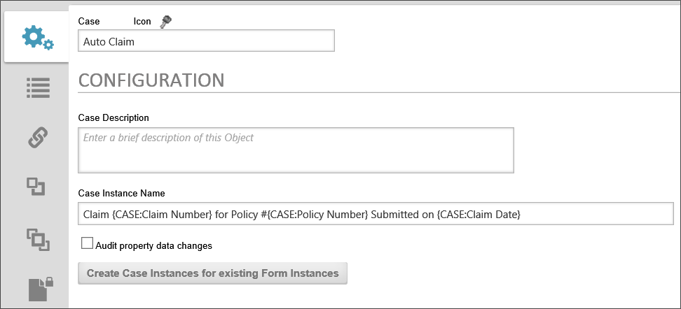
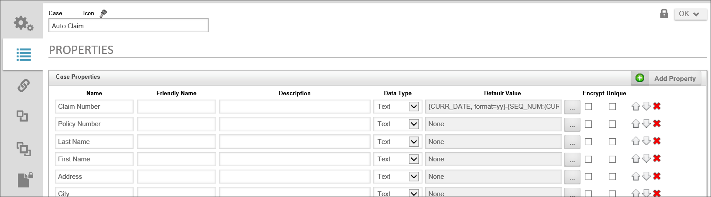
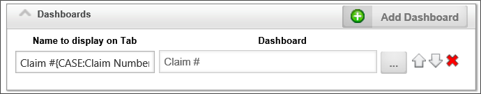
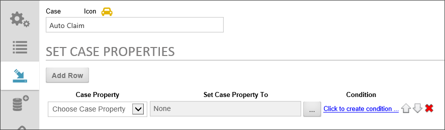
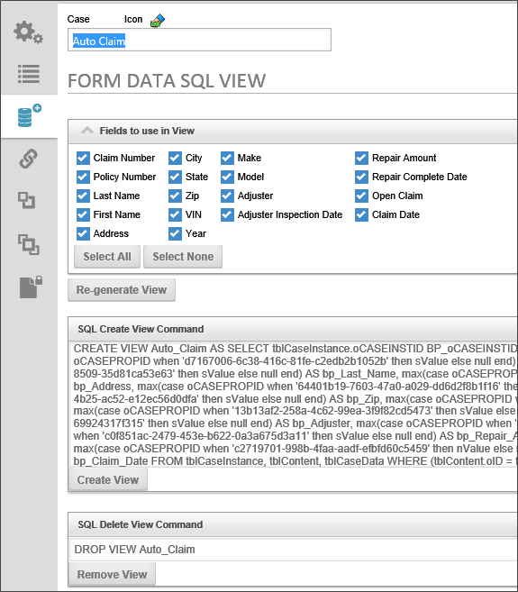
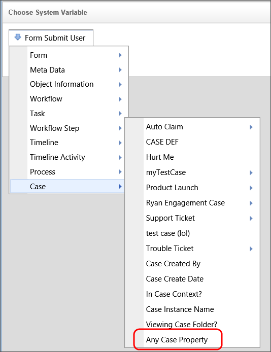

The Case definition specifies all of the properties for a Case. The Case properties create a shared data context that is passed between all of the processes, Forms, and Knowledge Views that are used in the case. Some changes have been applied to the Case definition for v4.02, in order to use the new Dashboard object, rather than a Workspace, to display the Case folder for a Case instance.

The Configuration tab contains the following properties.
The name of the Case.
The Icon that will be displayed for each Case instance. Clicking on the default icon will open the Icon Chooser dialog box to select the desired icon for the case.
The naming format for each case instance that is created. The Instance name can include System Variables, as shown in the example below:
Claim {CASE:Claim Number} for Policy #{CASE:Policy Number} Submitted on {CASE:Claim Date}
In this example, the instance name includes three of the Case property system variables to create a uniqie name for each instance.
A brief description of the Case's purpose.
Checking this box will create an audit trail for each change to any of the case properties, enabling all changes to be tracked.
If you click this button, Process Director will find any form definitions that point to this case definition or properties in this case definition. It will create the appropriate case instances and add all the appropriate objects to the case instance. It will search through all form instances, the workflows associated with the form instance, and all those attachments. You can then select the Instance for which to create a new case.
The Properties tab contains the list of case properties that create the data context for the case. To add a property, simply click the Add Property button. When you do so, a property row will appear with the following columns to configure.

The name of the property that will appear in the dropdown menus for field values and in the Choose System variable dialog box if a Friendly Name is not assigned, and which wiull be used as the identifier for the property when typing a Case system variable.
A value you can use, if needed, that will display in the user interface instead of the Name. This is a useful feature if the case property names are too technical or confusing. For users of Process Director v5.12 or higher, using a Camel Case value (e.g., MyProperty) for the Property's Name will automatically create a Friendly Name based on the Camel Case Name (e.g., My Property).
A description of the property's purpose.
The property's data type. The default data type is Text, and the following data types are available:
The value of the property that will be applied automatically when a new instance is created.
A check box that, when checked, will encrypt the value for storage in the database. This is useful for storing sensitive information.
The value will not be repeated, and will be unique to the case instance, i.e., no two case instances will have this same value for the property.
The order in which the properties appear in the Case definition is the same order in which they will appear in all System variable dropdown menus. You can change the order by clicking on the up or down arrows for the property's row. Properties can be deleted by clicking the red "X" icon.

The Dashboards Section enables you to choose a Dashboard object to use to display the case folder. The dashboard should contain Knowledge Views, Charts, reports, or other objects related to the Case definition. When the dashboard is opened in the context of a Case, only results that are applicable to the selected case instance will be displayed in the Dashboard. For information about how to configure a Dashboard, please see the Dashboards topic.
The Set Case Properties tab enables you to set the value of a Case property when a condition evaluates as true. This tab is available for users of Process Director v5.02 and higher.

To set a case property click the Add Row button to add a property row to the page. Each row cosists of three columns to configure.
The Case Property column contains a dropdown from which you can choose the Case property whose value you wish to set.
The Set Case Property column contains an object picker that opens the Choose System Variable dialog box to enable you to choose the value you wish to use to set the property value. You can choose any available System Variable, or can manually configure a string or text value.
The Condition column contains a link to open the condition builder. You can configure any desired condition or condition set that, when evaluated as true, will set the Case property to the configured value. The condition is continuously evaluated, much like Start When conditions in a Process Timeline.
You can change the order of the rows by clicking on the up or down arrow buttons (), and you can delete rows by clicking on the red X icon button().
Sometimes, you might wish to access the stored data about a case definition more easily. So, just as with a Form, Process Director enables you to create SQL views based on case definitions. Each Case Definition has a Form Data SQL View tab.

In the Fields to use in View section at the top of the screen, and the current SQL statement based on those fields below. By default, all fields are selected. You can can uncheck any undesired fields to deselect them. Select All and Select None buttons are provided for your convenience, as well. After you have chosen the fields you desire for the view, click the Re-generate View button to create the new SQL statement for your desired view. Additionally, you can edit the SQL statement manually.
Once the correct SQL statement has been generated, click the Create View button to create the view in your Process Director database.
If you wish to delete the view, click the Remove View button, which will delete the view from the process Director database.
In the Condition Builder, the System Variable dropdown includes an Any Case Property option that will enable a search across all case properties in a Case definition for a specified value.

In the initial versions of Process Director that support Case Management (v3.82 to v4.01) there is a Workspaces tab, from which you can display the workspace you wish to use to display the Case Folder. In these versions, you must configure a workspace with the This workspace is used for case instances property checked to display the case folder information.